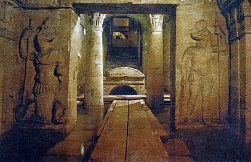

مقابر كوم الشقافة

مقابر كوم الشقافة
موقع أثري تاريخي يقع في الإسكندرية، في منطقة كوم الشقافة جنوب حي مينا البصل، وتعدّ من أهم مقابر المدينة، وتعتبر واحدة من عجائب الدنيا السبع في العصور الوسطى. تتكون المقبرة من سلسلة من المقابر والتماثيل والبقايا الأثرية الإسكندرانية لعبادة الجنائز الفرعونية، وبسبب الفترة الزمنية حينها، فإن العديد من سمات سراديب الموتى في كوم الشقافة تجمع النقاط الثقافية الرومانية واليونانية والمصرية.
بعض التماثيل كانت تُصنع بالأساليب المصرية، ولكن تحمل الأساليب الرومانية بالملابس وأسلوب الشعر، في حين أن ميزات أخرى كانت تشترك في أسلوب مماثل. وهناك درج دائري في منتصفها، يؤدي إلى المقابر التي تم حفرها داخل الصخرة خلال عصر الأباطرة الأنطونيين (القرن الثاني الميلادي)، و كان يُستخدم في الغالب لنقل الجثث المتوفاة. وترجع أهمية المقبرة نظراً لاتساعها وكثرة زخارفها وتعقيد تخطيطها، كما أنها تُعتبر من أوضح الأمثلة على تداخل الفن الفرعوني بالفن الروماني في المدينة وأروع نماذج العمارة الجنائزية، .وسميت المنطقة بهذا الاسم لكثرة البقايا الفخارية والكسارات التي كان يتركها الزوار اثناء زيارتهم، بدأ التنقيب في هذه المنطقة منذ عام 1892 ،و لم يعثر على المقبرة إلا عن طريق الصدفة يوم 28 سبتمبر سنة 1900.
موقعها وأهميتها
توجد معظم مقابر العصر الروماني في الإسكندرية في الجبانة الغربية وذلك فيما عدا مقبرة «شارع تيجران باشا» والتي عثر عليها في شرق المدينة
ومقبرة (كوم الشقافة) تقع جنوب (حي مينا البصل) وتعدّ من أهم مقابر مدينة الإسكندرية وتسمية المنطقة بـ (كوم الشقافة) بسبب كثرة البقايا الفخارية والكسارات التي كانت تتراكم في هذا المكان، وترجع أهمية المقبرة نظرا لاتساعها وكثرة زخارفها وتعقيد تخطيطها كما أنها من أوضح الأمثلة على اختلاط الفن الفرعوني بالفن الرماني في الإسكندرية وأروع نماذج العمارة الجنازية في الإسكندرية.
قصة الكشف
لقد عثر على المقبرة عن طريق الصدفة يوم 28سبتمبر عام 1900 والجدير بالذكر أن الحفائر قد بدأت في هذه المنطقة منذ عام 1892 إلا أنه لم يعثر عليها إلا سنة 1900 مصادفة، وهذه الصدفة تمت بواسطة حمار حيث أن الحمار سقط في الفتحة الرئيسية للمقبرة على عمق 12 مترآ وبالتالي عرفوا أن هناك آثار في هذه المنطقة وهم يبحثون عن سبب سقوط الحمار.
تاريخ الجبانة
تخطيط الجبانة وتشعب المقابر وتسلسلها واختلاف العناصر الزخرفية فيها يجعلنا نعتقد أن هذه المقبرة لم تبن دفعة واحدة وقد أكدت الحفائر بأن المقبرة وسعت خلال القرون التالية ولكن تشابه العناصر المعمارية والزخرفية يجعلنا لا نمد الفترة التي وسعت خلالها المقبرة إلى زمن بعيد وترجع المقبرة أو بالأصح أقدم جزء فيها (أي المقبرة الرئيسية) إلى الفترة فيما بين القرن الأول والثاني الميلادي (أواخر القرن الأول وأوسط القرن الثاني) ومما يؤكد ذلك وجود النحت البارز الذي نشاهده في المقبرة الرئيسية وأيضا الرسومات المصرية الصحيحة التي ترجع إلى منتصف العصر الروماني (حيث يوجد تاريخ بالعام 6996 ميلادية وأيضا تاريخ بالسنة 117
138 لعصر الإمبراطور هادريان وقد عثر أيضا على عملات ترجع إلى الفترة ما بين عهد ترايمان وعهد كلينيوس الأصغر ويبدو من ذلك أن المقبرة ظلت تستعمل حتى بداية القرن الرابع الميلادي ثم أُهملت.
تخطيط المقبرة
يبدو أن هذه المقبرة كانت خاصة بعائلة ثرية ثم استخدمت لدفن العديد من الأسر بعد أن تولى أمرها جماعة من اللحامين، وقد قامت هذه الجماعة بإضافة بعض الحجرات وبحفر فتحات الدفن في الجدران في صف واحد أو صفين يعلو كل منهما الآخر، والمقبرة ذات أربع طوابق كان لها طابق فوق الأرض اندثر عبر الزمن، كما أن الطابق الرابع مغمور الآن بالمياه نتيجة تسرب مياه الرشح في مسام الصخر.
ويمكن إيجاز التخطيط على النحو التالي:
مدخل فوق سطح الأرض ثم سلم حلزوني يفضي إلى (الطابق الأرضي الأول) ويتكون بدوره من دهليز يتصل بصالة مستديرة الشكل يتوسطها بئر (ROTUNA) ويجاور هذه الصالة المستديرة (صالة مستطيلة) الشكل متسعة مزودة بثلاثة أرائك هي صالة المأدب. وفي نهاية الصالة المستديرة يوجد سلم يؤدي إلى (الطابق الأرضي الثاني) وهو الطابق الذي يوجد فيه الجزء الرئيسي للدفن في المقبرة، وهو عبارة عن حجرة ذات ثلاث فتحات في الحائط ودهليزين يمتد لف في زوايا قائمة حول حجرة الدفن ونجد في هذين الدهليزين فتحات وحجرات صغيرة للدفن ثم نصل بعد ذلك إلى (الطابق الأرضي الثالث) وتغمره المياه حاليا. استعمل للدفن في عصر لاحق وكان ضمن التخطيط الأصلي للمقبرة ويُعتقد أن هذا الطابق كان يحتوي على ممرات تؤدي إلى (السيرابيوم) ولكن هذا غير مؤكد.